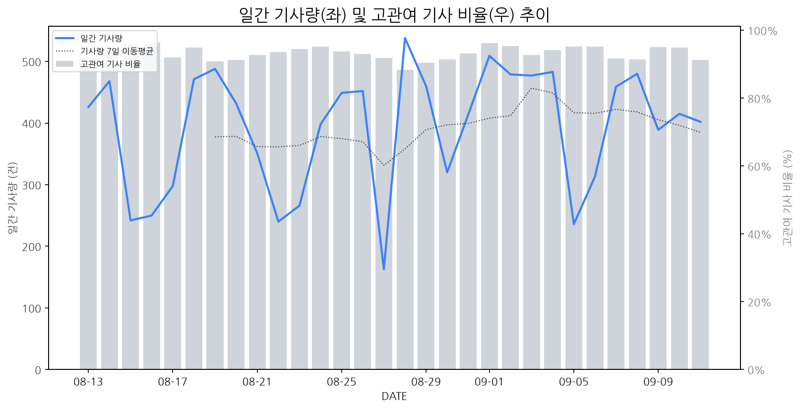

1
시장 활동 지표
기사량 추세 & 이상 징후 탐지
시장의 '전체 기사량'이 평소보다 비정상적으로 급증했는지(Spike)를 차트로 확인하고, LLM이 분석한 급등의 핵심 원인을 파악할 수 있음

고관여 기사란? 산업 연관 키워드로 수집된 기사들 중 디스플레이 키워드에 가중치를 반영하여 도출된 관련성 높은 기사
수집된 기사 수 (2026-09-11)
402
-17% WoW
기사량 변동 수준 (7일 이동평균 대비)
±6.7% 이하
2
오늘의 키워드
급격한 관심 ↑, 주목해야 할 키워드
1
tv
+1.6σ
LG전자 프리미엄 TV 출시와 삼성전자 특허 소송이 TV 시장 주목도를 높였다.
Related Metrics
금일 언급량: 13, 전일 대비: +8
Interpretation
프리미엄 TV 시장 경쟁 심화
Next Step
'tv' 관련 상세 기사 및 경쟁사 반응 모니터링
3
실시간 Risk 키워드
경계해야 할 시그널 탐지
특정 토픽의 부정 감성 점수가 급등할 때 이를 즉시 탐지하고, "근거 기사" 링크를 통해 리스크의 실체를 빠르게 파악할 수 있음
키워드 분석 결과, 오늘은 걱정할 만한 하락 신호가 없습니다. (부정 언급량 변화: +1.5σ 이내)
4
주요 이벤트 모니터링
실시간 산업 동향 파악을 위한 주요 활동
최근 발생한 주요 기업들의 신제품 출시, 투자 등 주요 이벤트를 제공하여 매일 경쟁사 동향을 확인할 수 있음
중대형 OLED 시장이 모니터와 자동차 분야로 확대되며 성장세를 보이고 있으며, 한국 디스플레이 기업들이 이 시장을 선도하고 있습니다. 이는 기존 IT 및 TV 시장을 넘어 새로운 성장 동력을 확보하려는 움직임입니다.
Impact
중대형 OLED 시장의 확장은 기술 경쟁 심화와 더불어 관련 부품 및 소재 산업의 동반 성장을 견인하며 디스플레이 시장의 판도를 재편할 가능성이 있습니다.
Next Step
중대형 OLED 생산 능력 확대 및 기술 혁신을 통해 시장 선점 효과를 극대화하고, 자동차 및 모니터 시장의 차별화된 요구사항에 맞는 제품 개발에 집중해야 합니다.
애플이 '아이폰 듀오'와 '아이폰 18프로'라는 이름의 새로운 폴더블폰 모델을 선보였으며, 이들은 맥북 수준의 고성능을 제공하는 것으로 알려졌다. 이번 신제품은 폴더블 기술과 고성능 모바일 컴퓨팅을 결합하려는 애플의 전략을 보여준다.
Impact
이는 폴더블 디스플레이 시장의 기술적 진보를 가속화하고, 고성능 폴더블 기기에 대한 소비자 기대를 높여 관련 부품 및 소재 시장 성장을 견인할 것으로 예상된다.
Next Step
기존 폴더블 디스플레이 공급업체는 고성능 및 내구성 요구사항을 충족하는 차세대 패널 기술 개발에 집중하고, 애플과의 파트너십 강화를 모색해야 한다.
양자컴퓨터의 등장으로 비트코인 가치에 대한 우려가 제기되었으며, 애플은 10월에 최소 7개 이상의 신제품을 출시할 예정입니다.
Impact
양자컴퓨터의 발전은 미래 보안 기술의 중요성을 부각시키며, 이는 디스플레이와 연관된 보안 기능 강화 또는 새로운 디스플레이 기술 개발에 대한 수요를 촉진할 수 있습니다. 또한, 애플의 신제품 출시는 해당 디스플레이 패널 시장에 직접적인 영향을 줄 수 있습니다.
Next Step
양자컴퓨터 보안 위협에 대비한 디스플레이 보안 기술 연구 및 애플 신제품 출시 동향을 면밀히 파악하여 관련 디스플레이 패널 공급 및 기술 개발 전략을 수립해야 합니다.
최근 '공간을 밝히는 순백의 미학, 화이트 게이밍 환경 구성하기'라는 제목의 CERT(신제품 출시 등) 이벤트가 발생했다. 이는 게이밍 환경에서 화이트 색상의 디스플레이 제품에 대한 관심과 수요가 증가할 가능성을 시사한다.
Impact
이번 이벤트는 기존 블랙 중심의 게이밍 디스플레이 시장에 '화이트'라는 새로운 색상 트렌드를 제시하며, 관련 제품 라인업 확대 및 디자인 다변화 경쟁을 촉발할 수 있다.
Next Step
디스플레이 제조 기업은 화이트 색상의 게이밍 모니터 및 관련 제품 개발을 가속화하고, 소비자 선호도를 반영한 디자인 및 성능 개선에 집중해야 한다.
네이버페이가 SOOP과의 연동을 통해 서비스 범위를 확대하며 ICT 사업 전반에 걸쳐 변화를 모색하고 있습니다. 이는 네이버의 커머스 및 콘텐츠 생태계 강화 전략의 일환으로 해석됩니다.
Impact
네이버의 ICT 사업 확장 및 연동 강화는 디스플레이 제조 기업에게는 네이버페이와 SOOP을 통한 새로운 디스플레이 기반 서비스의 출현 가능성을 시사하며, 잠재적인 B2B 사업 기회 또는 협력 방안 모색의 필요성을 제기합니다.
Next Step
네이버의 ICT 사업 확장 전략과 디스플레이 연관성을 면밀히 파악하고, 새로운 서비스 출시에 대비한 디스플레이 솔루션 개발 및 협력 방안을 검토해야 합니다.